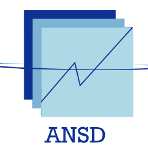
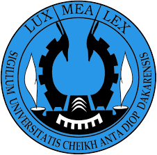
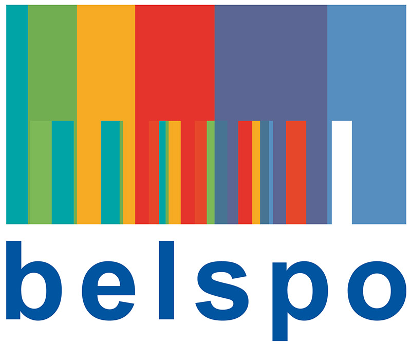

|  |  |  |
|---|
Le 9 septembre 2019 à Dakar, Sénégal.
Ce workshop exposera les résultats du projet de recherche MAUPP visant à améliorer notre compréhension et nos prévisions spatiales de l’urbanisation et de la répartition de la population urbaine en Afrique grâce à l’utilisation de la télédétection et de la modélisation spatiale. Nous démontrerons les potentialités des données spatiales produites et disponibles en libre accès pour la prise de décision dans un certain nombre de situations réalistes (ex : épidémiologie, crise sanitaire humanitaire, catastrophe naturelle, etc.). L’atelier est destiné aux décideurs et aux instituts de recherche, y compris les instituts publics et ministères, les organisations internationales, les agences de développement, les ONG, etc.
Un séminaire sera également organisé le lendemain.
Attention ! Pour les exercices pratiques, des connaissances de base en SIG sont nécessaires et les participants doivent apporter leur propre ordinateur portable.
Published on August 29, 2019, by Catherine Linard